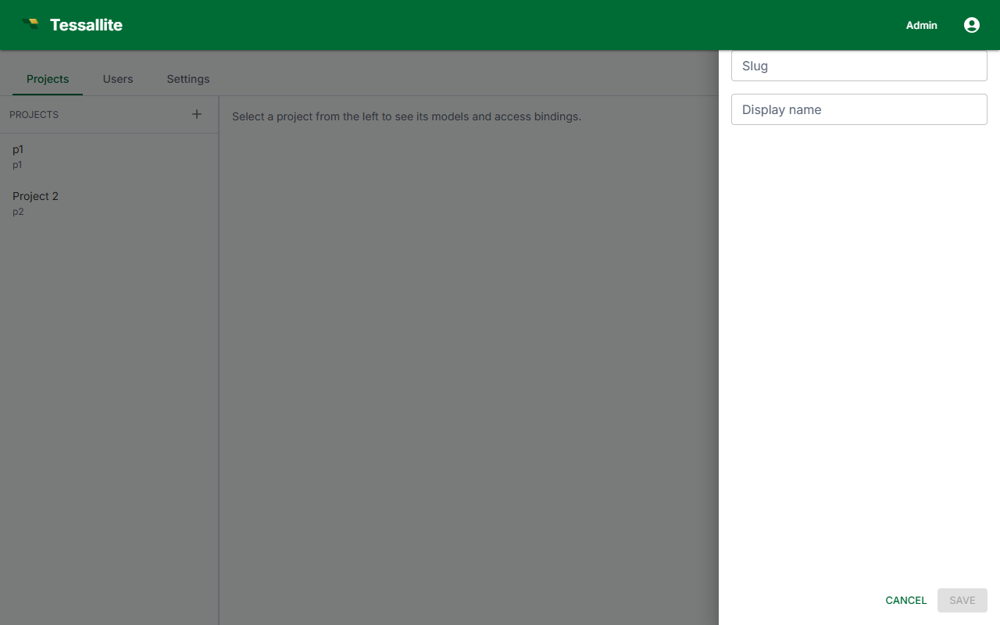

Create a Project

What this covers
A project is the top-level container within a workspace. It connects a workspace to exactly one data source and holds exactly one model. This article explains what a project is, who can create one, the creation flow, and what you can configure after creation.
Before you start
- You must be signed in as a Tenant Admin or a Modeller with project-creation permission granted by a Tenant Admin.
- You need the connection details for the data source the project will use. You can enter these during creation or update them later in project settings.
What a project contains
Within the multi-tenant hierarchy — Platform, Workspace, Project, Model — a project sits below the workspace. Each project:
- Connects to exactly one data source (PostgreSQL, BigQuery, or Hadoop/Spark).
- Contains exactly one model, built in the Model Builder.
- Has its own access control: team members can be granted Modeller or Analyst roles scoped to that project.
Multiple projects can exist within the same workspace, each pointing to a different (or the same) data source.
Steps
- Sign in at port 3000 as a Tenant Admin or Modeller.
- From the workspace dashboard, click New Project.
- Enter a Project name. Use a name that identifies the data domain (for example,
Sales AnalyticsorLogistics 2026). - Enter an optional Description. This is visible to all workspace members in the project list.
- Select the Data source type: PostgreSQL, BigQuery, or Hadoop/Spark Thrift Server.
- Enter the connection parameters for the selected source type. See Add a Data Source for the full parameter reference.
- Click Test Connection to verify. A success message confirms the gateway can reach the source.
- Click Create Project. The project appears in the workspace project list and the Model Builder opens with an empty model.
The Test Connection step does not save the project. If you close the browser before clicking Create Project, no project is created.
Project settings after creation
Open the project and click the Settings tab to edit the following:
| Setting | What it controls | Who can change it |
|---|---|---|
| Name | Display name shown in project lists and BI tool schema listings. | Tenant Admin, Modeller |
| Description | Free-text description shown in the project list. | Tenant Admin, Modeller |
| Data source | Connection parameters and source type. Changing source type after tables have been added invalidates the model. | Tenant Admin |